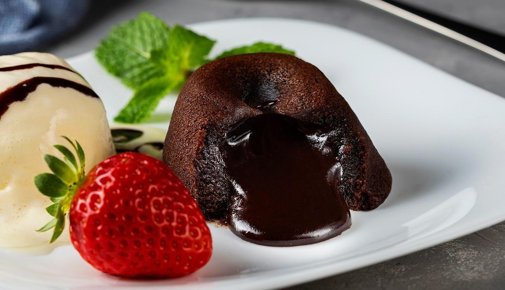

Petit Gâteau by Erick Jacquin
O Petit Gâteau, é um pequeno bolo criado por Michel Bras em 1981. Nos países de língua francesa, uma sobremesa de Petit Gâteau com chocolate é conhecida como "gâteau fondant au chocolat" ou simplesmente "chocolat fondant".

Ingredientes
- 250g de manteiga sem sal
- 300g de chocolate meio amargo
- 5 gemas
- 5 ovos inteiros
- 170g de açúcar
- 100g de farinha de trigo
- 50g de açúcar de confeiteiro
Vídeo
YouTube
Tabela Nutricional
| INFORMAÇÃO NUTRICIONAL Porção de 80g (1 unidade) |
||
|---|---|---|
| Quantidade por porção | % VD (*) | |
| Valor energético | 290kcal = 1218kJ | 14 |
| Carboidratos | 25g | 8 |
| Proteínas | 5,4g | 7 |
| Gorduras totais | 19g | 34 |
| Gorduras saturadas | 10g | 46 |
| Fibra Alimentar | 1,8g | 7 |
| Sódio | 43mg | 2 |
| *% Valores Diários de referência com base em uma dieta de 2000 kcal ou 8400kJ. Seus valores diários podem ser maiores ou menores dependendo de suas necessidades energéticas | ||